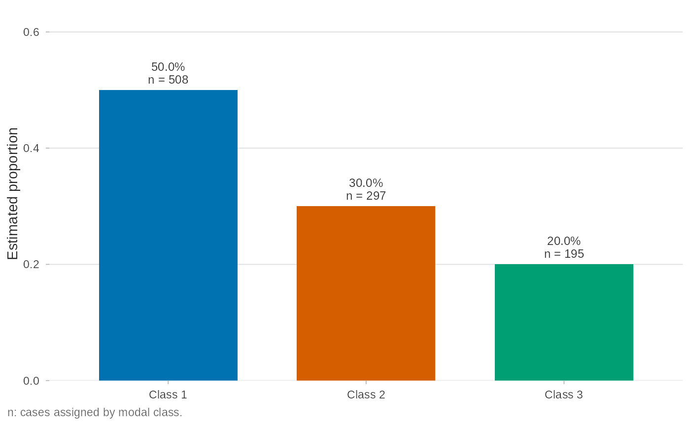
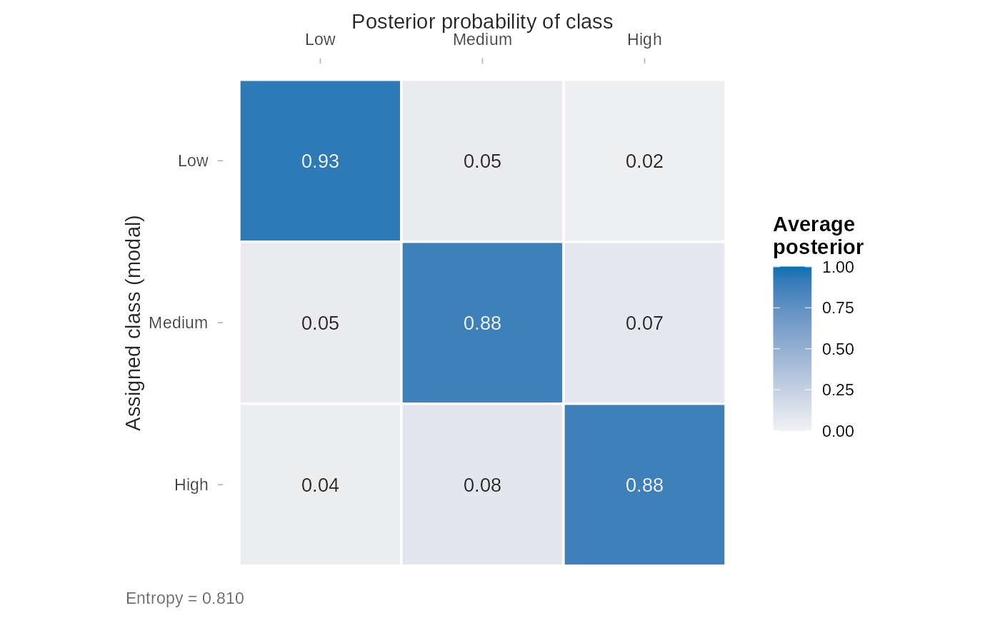
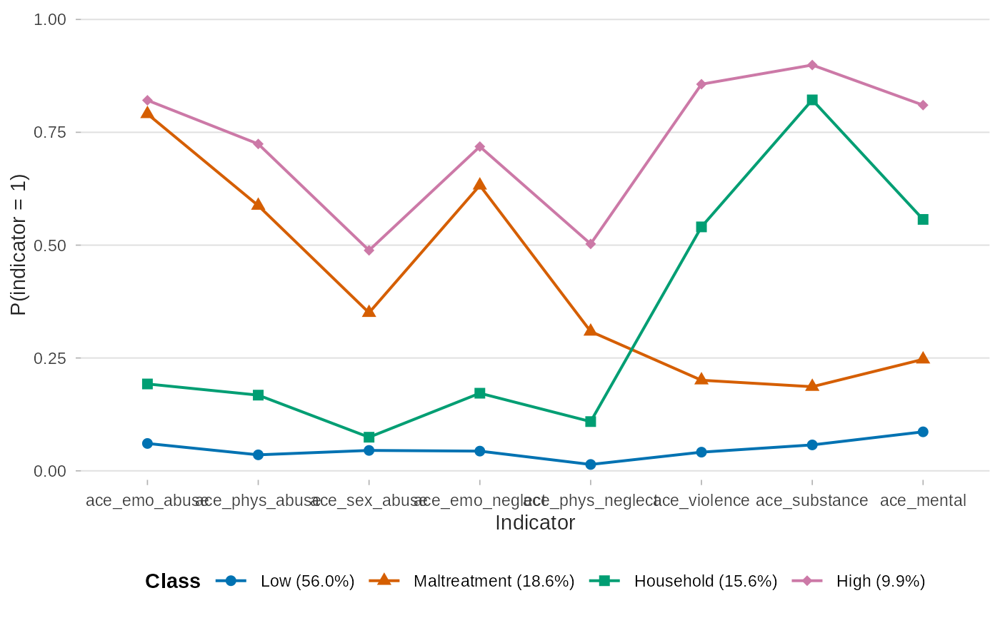
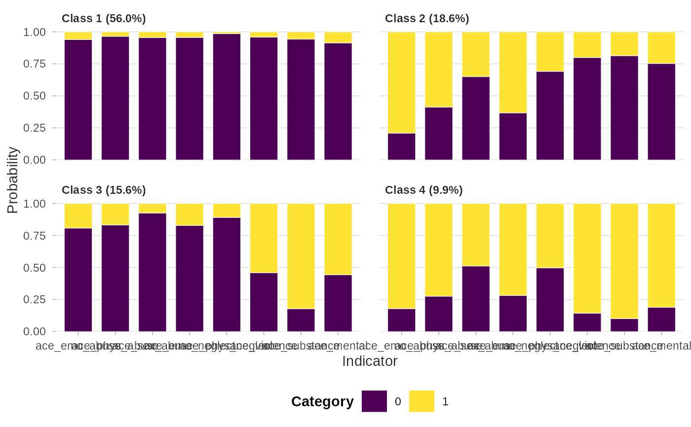
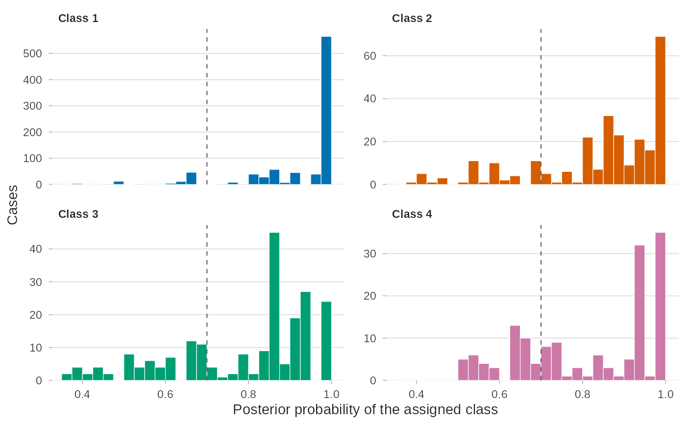
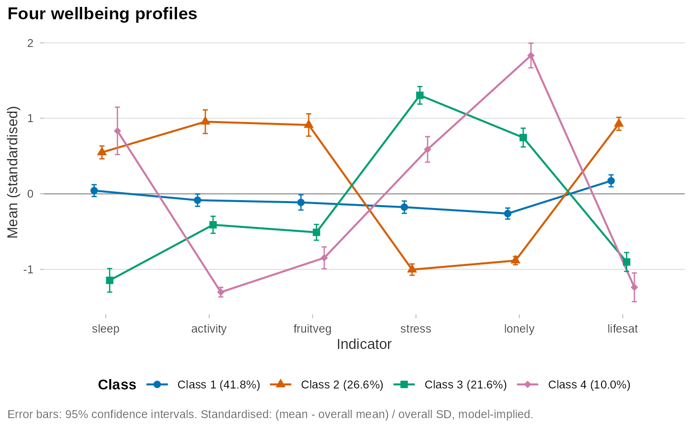
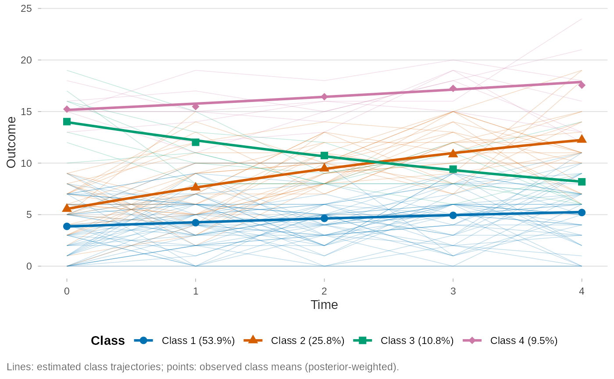

Plot a fitted mixture model
autoplot.latentmix.Rdautoplot() draws the standard figures of a latent class, latent profile, latent
transition or growth mixture model as a ggplot object, which can be modified with the
usual ggplot2 syntax (+ labs(...), + theme(...), + scale_colour_manual(...)).
plot() draws the same figure and returns it invisibly.
Usage
# S3 method for class 'latentmix'
autoplot(
object,
type = NULL,
items = NULL,
category = NULL,
error = NULL,
standardize = FALSE,
level = 0.95,
labels = NULL,
group = NULL,
data = NULL,
spaghetti = 0,
seed = 1,
points = TRUE,
geom = c("line", "area"),
threshold = 0.7,
intercept = FALSE,
lines = TRUE,
...
)
# S3 method for class 'latentmix'
plot(x, ...)Arguments
- object, x
- type
The figure; see Details.
NULLpicks the default of the model.- items
Optional character vector of indicators to show (and their order).
- category
LCA profiles: the category whose probability is shown,
"last"(highest),"first","all"(one panel per category), a category label or a category number.NULL(default):"last"if every indicator is binary,"all"otherwise.- error
Error bars of
"profile"plots:"ci"(Wald confidence interval atlevel),"se"(plus or minus one standard error),"sd"(LPA: plus or minus one within-profile standard deviation) or"none".NULL(default):"ci"for LPA,"none"otherwise. Standard errors are available for single-group LCA and LPA.- standardize
LPA profiles: show means (and error bars) in units of the model-implied overall standard deviation of each indicator, centred at its model-implied overall mean.
- level
Confidence level of confidence intervals.
- labels
Optional class labels (one per class), e.g.
c("Low risk", "Moderate", "High risk"); the estimated class percentages are added in profile plots.- group
Multigroup models: groups to show (labels or numbers); default all.
- data
Growth trajectories: the data the model was fitted to (same rows, same order), for observed class means and individual trajectories.
- spaghetti
Growth trajectories with
data: number of randomly chosen individual trajectories to draw (0: none).- seed
Random seed for choosing the individual trajectories.
- points
Growth trajectories: draw the estimated class means at the measurement occasions as points (
TRUE); withdata, the observed means are drawn instead.- geom
LTA prevalence:
"line"or"area"(stacked).- threshold
Posterior histograms: position of a dashed reference line (e.g. the conventional 0.7);
NULLfor none.- intercept
Regression plots: include the intercepts.
- lines
Profile plots: join the points of a class with lines (
FALSE: points only, e.g. for unordered indicators).- ...
Further arguments: ignored by
autoplot(); passed toautoplot()byplot().
Value
autoplot(): a ggplot object. plot(): the same object, invisibly, after
drawing it.
Details
The available types depend on the model (the first is the default):
| Model | type |
| LCA, multigroup LCA | "profile", "bars", "sizes", "classification", "posterior", "regression" |
| LPA, multigroup LPA | "profile", "correlation", "sizes", "classification", "posterior", "regression" |
| LTA | "transitions", "prevalence", "profile" |
| LCGA / GMM | "trajectories", "sizes", "classification", "posterior", "regression" |
| two-level LCA | "profile", "bars", "conditional", "sizes", "posterior" |
| two-level LPA | "profile", "conditional", "sizes", "posterior" |
| two-level LCA, random intercepts | "profile", "bars", "sizes", "posterior" |
"profile": LCA, item-response profile, the probability of one category of each indicator (lines and points per class; class sizes in the legend). By default the highest category is shown when every indicator is binary, and every category (one panel per category) otherwise;categorychooses. LPA: class means of each indicator witherrorbars, optionally standardised. Multigroup models: one panel per group. LTA: item-response profiles (continuous indicators: profile means) at every wave (one panel per wave), which shows where measurement is not invariant (invariance = "none")."bars": LCA, stacked bars of the category probabilities of each indicator, one panel per class."correlation": LPA with within-profile covariances (covariances = "equal"or"varying"), heat map of the within-profile correlations, one panel per profile."sizes": estimated class proportions (bars, labelled with the percentage and the number of cases assigned by modal class); per group for multigroup models."classification": classification quality, the average posterior probabilities by modal class as a heat map (large diagonal values: well separated classes)."posterior": histograms of the posterior probability of the assigned class, one panel per modal class, with a reference line atthreshold."regression": one-step covariate model (covariates =), forest plot of the odds ratios of class membership with confidence intervals."transitions": LTA, transition probability matrices as heat maps, one panel per transition."prevalence": LTA, class proportions at every wave (lines, or stacked areas withgeom = "area")."conditional": two-level models (lca()/lpa()withlevel2), the distribution of the within (individual-level) classes in every between (cluster) class,P(CW | CB)(conditionalprobs()), as stacked bars; the axis labels give the share of clusters in each between class."trajectories": growth models, the estimated mean trajectory of every class (one panel per process for parallel-process models). Withdata(the data the model was fitted to), the observed class means at every wave (posterior-probability-weighted means of the observed values) are added as points, andspaghettiindividual trajectories (coloured by modal class) in the background.
Plots that use parameters(), itemprobs(), profilemeans(), transitions(),
growthparams(), coeftable() or classify() need the Julia session in which the
model was fitted; "sizes" and "classification" (except for multigroup models) use
only the summary stored in the R object.
See also
lm_fitplot() (class enumeration), autoplot.latentmix_bch() (auxiliary
models), lm_theme(), itemprobs(), profilemeans(), transitions(),
growthparams().
Examples
# A summary-only model object (as stored by lca()); "sizes" and "classification"
# need no Julia session
m <- structure(list(info = list(kind = "LCA",
fit = list(K = 3, n = 1000, entropy = 0.81),
classprobs = c(0.5, 0.3, 0.2), counts = c(508, 297, 195),
avgpost = matrix(c(0.93, 0.05, 0.04, 0.05, 0.88, 0.08, 0.02, 0.07, 0.88), 3))),
class = "latentmix")
autoplot(m, type = "sizes")

autoplot(m, type = "classification", labels = c("Low", "Medium", "High"))

data(aces); data(wellbeing); data(depression)
# \donttest{
# ACE classes: probability of each adversity by class
m <- lca(aces, starts_with("ace_"), K = 4)
#> Starting Julia ...
autoplot(m, category = "1",
labels = c("Low", "Maltreatment", "Household", "High"))

autoplot(m, type = "bars")

plot(m, type = "posterior") # how certain the class assignments are

# wellbeing profiles on a standardised scale
p <- lpa(wellbeing, sleep:lifesat, K = 4, variances = "varying")
autoplot(p, standardize = TRUE) + ggplot2::labs(title = "Four wellbeing profiles")

# depressive-symptom trajectories with 100 individual curves
g <- growth(depression, dep1:dep5, K = 4, model = "gmm", degree = 2)
autoplot(g, data = depression, spaghetti = 100)

# }